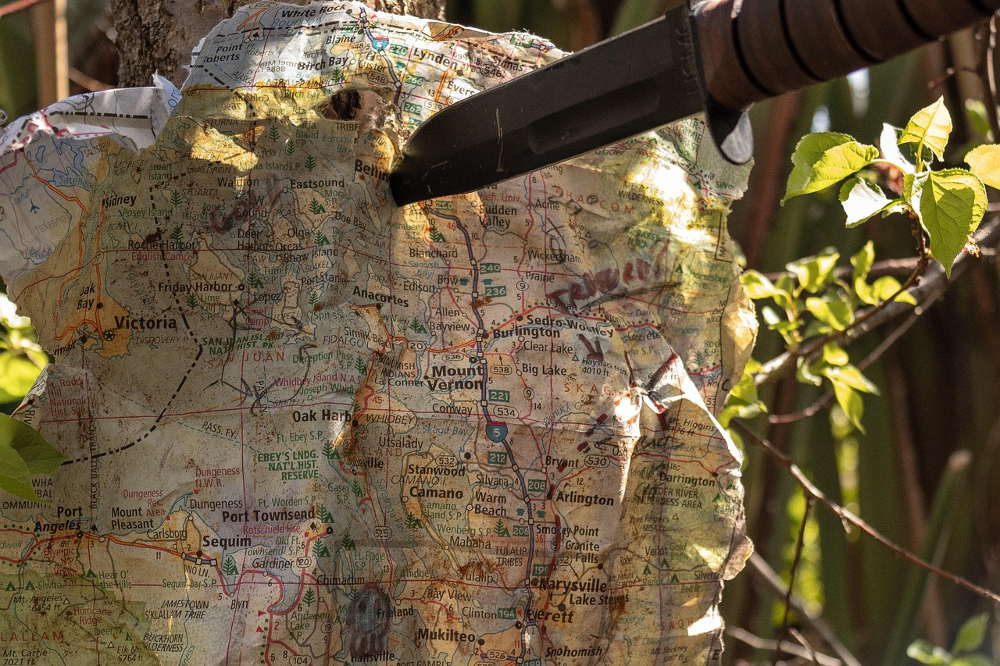

Après quelques jours, le maitre d'arme, fatigué par la marche et le danger constant, décide d'abandonner la quête. Le chevalier, jugeant la mission trop risquée sans renforts, choisit lui aussi de quitter la compagnie. Te laissant seul avec le magicien.